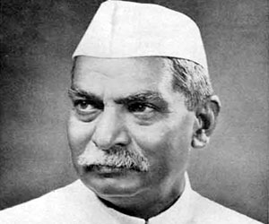
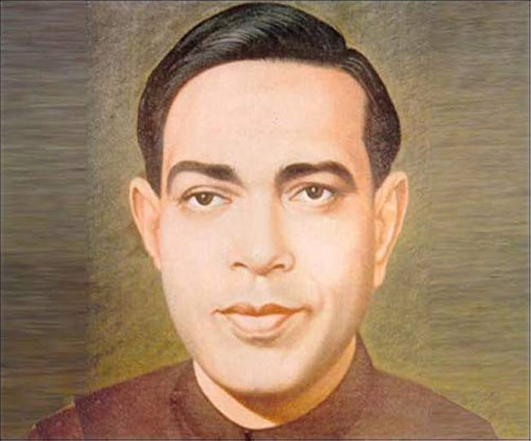

Famous Personalities
1)Dr.Rajendra Prasad
Bio-
Prasad (born December 3, 1884, Zeradei, India—died February 28,
1963, Patna) was an Indian politician, lawyer, and journalist who was the first
president of the Republic of India (1950–62). He also was a comrade of
Mahatma Gandhi early in the noncooperation movement for independence and
was president of the Indian National Congress (1934, 1939, and 1947).
Contribution-
Dr. Rajendra Prasad's contributions include being a key figure in
India's independence movement, serving as the first President of
India, and presiding over the Constituent Assembly that drafted the
Constitution. He was a close associate of Mahatma Gandhi, played
a leading role in major movements like the Non-Cooperation
and Quit India movements, andlater focused on establishing a stable
democracy as President. He was also involved in disaster relief
efforts and advocated for education and agricultural development.
2)Anand Kumar
Bio-
Birth and childhood:
Anand Kumar was born in Patna, Bihar, to a father who worked as a clerk in the postal department and a homemaker mother.
Financial hardship:
His family's financial struggles intensified after his father's death, forcing his mother to sell papads to support the family.
Early education:
Due to the cost of private schools, he attended a government school that taught in Hindi.
Academic talent:
He was a gifted student, particularly in mathematics, and his
papers on number theory were published in journals during his graduation.
He was selected for a program at Cambridge University,
but could not attend due to his family's financial crisis
Contributions-
Anand Kumar is best known for founding the Super 30 program,
which provides free coaching to underprivileged students for the
Indian Institutes of Technology (IIT) entrance exams. His other
contributions include establishing the Ramanujan School of Mathematics
to fund Super 30, and advocating for educational opportunity and access,
which has been recognized with awards like the Padma Shri and an award from
the British Columbia for his educational contributions
papers on number theory were published in journals during his graduation.
He was selected for a program at Cambridge University,
but could not attend due to his family's financial crisis
which provides free coaching to underprivileged students for the
Indian Institutes of Technology (IIT) entrance exams. His other
contributions include establishing the Ramanujan School of Mathematics
to fund Super 30, and advocating for educational opportunity and access,
which has been recognized with awards like the Padma Shri and an award from
the British Columbia for his educational contributions
3)Ramdhari Singh Dinkar

Bio-
Ramdhari Singh Dinkar (1908–1974) was an acclaimed Indian poet,
essayist, and freedom fighter known for his nationalist poetry, which
evoked courage and patriotism during India's struggle for independence.
Awarded the title "Rashtrakavi" (National Poet), he is
considered one of the most important modern Hindi poets, celebrated
for his works that blend patriotism, social justice, and philosophical
introspection.
Contributions-
Ramdhari Singh Dinkar's contributions include inspiring nationalist
poetry during India's freedom struggle, promoting social justice
through his writings, and a significant career in public service as a
Rajya Sabha member and Vice-Chancellor of Bhagalpur University.
He authored numerous influential works of poetry and prose, which
earned him major awards like the Padma Bhushan, Sahitya Akademi,
and the Jnanpith Award.
Startups & Innovation
Emerging entrepreneurs and technology initiatives from Bihar.
Bihar in Cinema
Movies like Gangs of Wasseypur highlight Bihar’s culture.